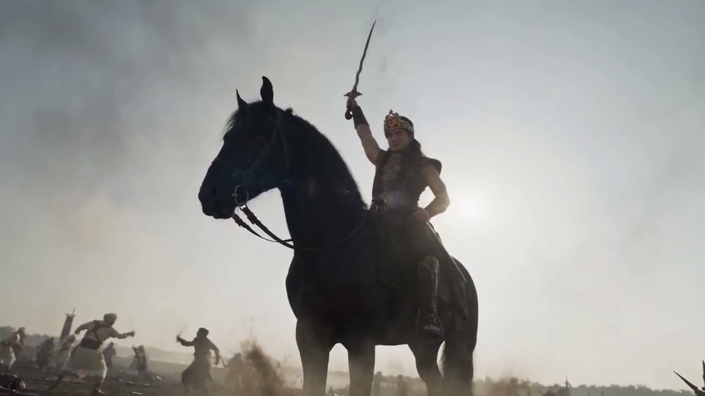
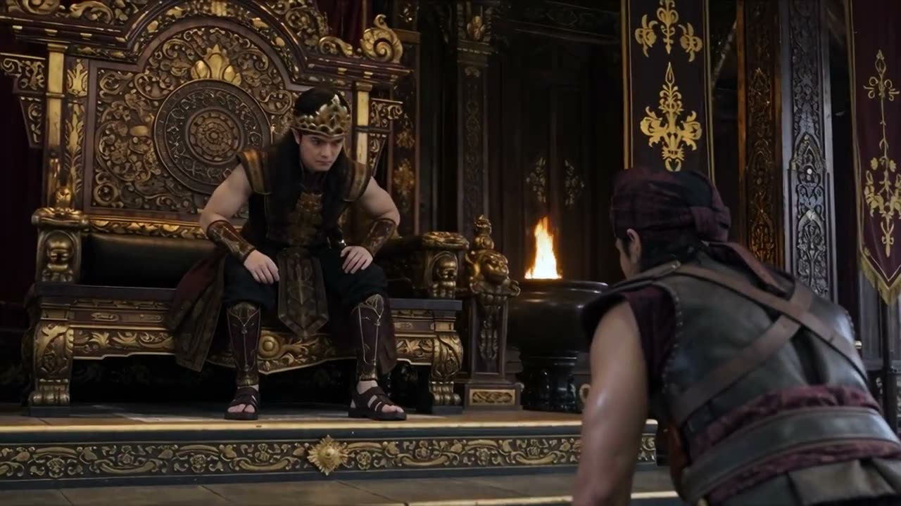
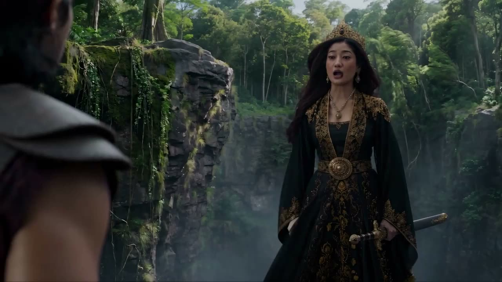
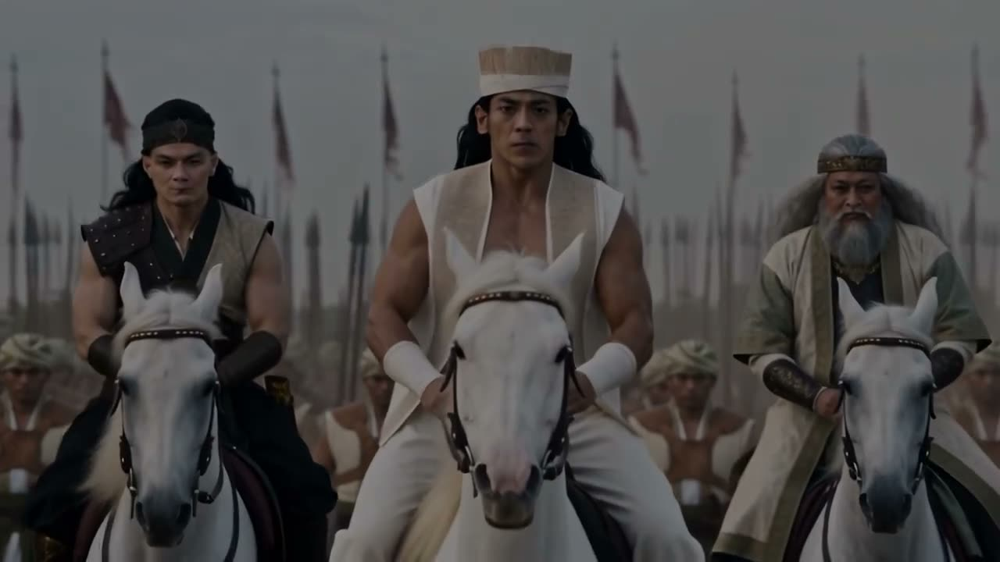
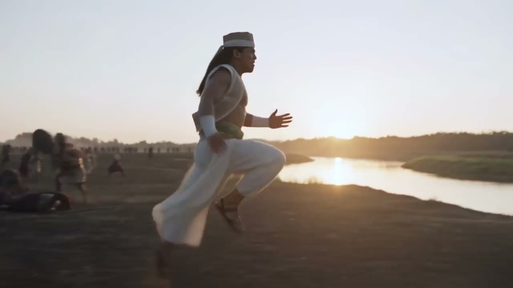

Jaka Tingkir Saga Dynasty
Legenda Jaka Tingkir, dari pemuda desa sampai takhta Pajang, digarap sebagai serial kolosal. Proyek milik studio sendiri, dan tempat kami menguji pipeline sampai batasnya.

Cerita
Jaka Tingkir adalah legenda yang dikenal banyak orang Jawa sejak kecil: pemuda dari Pengging yang menapaki jalan menuju takhta Pajang dan berhadapan dengan Arya Penangsang dari Jipang. Kami mengangkatnya sebagai serial drama kolosal, lengkap dengan istana, perang, kuda, dan api.
Pendekatan
Karena ini IP kami sendiri, serial ini jadi tempat menguji hal yang paling sulit dalam film AI: wajah tokoh yang tetap sama dari adegan ke adegan, adegan massal, dan cahaya api di malam hari.
Setiap tokoh dimulai dari lembar karakter. Sutradara memilih setiap frame yang dipakai; AI menggarap gambarnya. Cara kerja yang teruji di sini yang kemudian kami bawa ke proyek klien.
Kredit
- Produksi
- kampanye.ai
- Sutradara
- Nama menyusul
- Penulis naskah
- Nama menyusul
- Desain karakter
- Nama menyusul
- Produksi AI
- Tim kampanye.ai
- Musik dan suara
- Nama menyusul
- Dibuat dengan
- Pipeline AI kampanye.ai
Dari trailer





Frame diambil langsung dari trailer resmi.
Dari lembar karakter ke layar
Arya Penangsang dikunci dulu di lembar karakter: wajah, mahkota, dan kostum dari depan dan belakang. Setelah itu baru ia masuk adegan, dan tetap orang yang sama di setiap shot.

Blok proses ini opsional dan bisa diganti per proyek: sebelum dan sesudah, dari brief ke frame, atau di balik layar.

Punya cerita yang ingin dibuat sebesar ini?
Kirim brief-mu- Lebih suka ngobrol dulu?
- halo@kampanye.ai